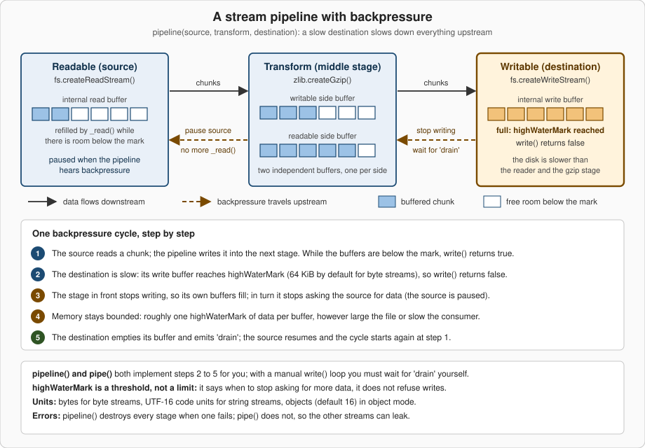

Streams
|
This content was generated with the assistance of AI and should be verified against the official documentation before being relied on in production. |
This page is written against Node.js 26 (26.10.0, released 2026-09-21, the Current line that becomes LTS on 2026-10-28), with the differences
of Node.js 24 "Krypton" (24.21.0, Active LTS) and Node.js 22 "Jod" (22.23.3, Maintenance) called out; versions and stability levels were
checked against the official documentation on 2026-10-04, and every example below was run on all three lines unless the text says
otherwise. A stream is an abstract interface for working with data that arrives, or leaves, in pieces over time: a file being read, an HTTP
body being uploaded, a gzip compressor emitting bytes. Instead of waiting for the whole value, you handle one chunk at a time and the
runtime makes sure a fast producer cannot flood a slow consumer. The node:stream module is Stability 2 (Stable); the node:stream/promises
functions are Stable too; the Readable operators (map(), filter(), take() and friends) are still Stability 1 (Experimental), while
readable.compose() and readable.iterator() became stable in v24.0.0 and v22.17.0 and stream.compose() in v26.2.0. A preview of a new
iterator-based design, node:stream/iter, is Experimental and behind a flag; it is introduced in
Implementing Custom Streams. This page is about using streams and understanding
their flow control; writing your own Readable, Writable, Duplex and Transform classes is the subject of that next page, and the
WHATWG variant of the same idea (ReadableStream, CompressionStream) is in Web Streams & Interop.
The running scenario is the Bookshelf application that grows across this section, described in
Introduction & Architecture.
The stability and version map
| API | Stability (Node.js 26 docs) | Version notes |
|---|---|---|
|
2 Stable |
The streams in use today are "Streams 3", introduced with v0.11.5 (2013). |
|
Stable |
Added in v10.0.0. Since v14.0.0 the |
|
Stable |
Added in v15.0.0. The |
|
Stable |
Added in v12.3.0 and v10.17.0. |
|
Stable |
Marked stable in v24.0.0 and v22.17.0. |
|
Stable |
Added in v16.9.0 and marked stable in v26.2.0, so on Node.js 24 and 22 it is not yet labelled stable (see the observed note at the end of the operators section). |
|
1 Experimental |
Added in v17.4.0 and v17.5.0 (backported to v16). |
|
Stable |
No longer experimental since v24.2.0 (added v20.4.0 and v22.4.0). |
|
Stable |
Added in v22.6.0 and v20.17.0. |
|
Stable |
Added in v19.9.0 and v18.17.0. A "bump default highWaterMark" change landed in v22.0.0. |
|
0 Deprecated (documentation only) |
Using it to destroy long-lived resources is deprecated by DEP0209 since v26.8.2; |
|
1 Experimental |
Added in v26.1.0; needs |
Source: Node.js API: Stream, Node.js API: DEP0209
The Node.js 26 documentation says readable.map() and the other operators are Experimental, yet in every run on Node.js 26, 24 and 22 for this
page they worked without a flag and printed no ExperimentalWarning. That is observed behaviour, not a promise: an Experimental API may change
or be removed in any release, so keep operator chains behind a small helper of your own.
Why streams exist
Reading a file with fs.promises.readFile() allocates one buffer as big as the file before your code sees the first byte; reading it with a
stream hands you 64 KiB at a time. The next two programs count the lines of a generated catalogue of 6 million rows (about 255 MiB), first
by loading the whole file and then by streaming it. They were run on macOS (arm64) after generating the file with a short script that itself
respects backpressure.
import { readFile } from 'node:fs/promises';
const data = await readFile('big.csv'); // the whole file in one Buffer
let lines = 0;
for (const byte of data) if (byte === 0x0a) lines++;
console.log({ lines, rssMiB: Math.round(process.memoryUsage().rss / 2 ** 20) });import { createReadStream } from 'node:fs';
let lines = 0;
let peak = 0;
for await (const chunk of createReadStream('big.csv')) { // one 64 KiB chunk at a time
for (const byte of chunk) if (byte === 0x0a) lines++;
peak = Math.max(peak, process.memoryUsage().rss);
}
console.log({ lines, peakRssMiB: Math.round(peak / 2 ** 20) });| Node.js line | readFile() (final RSS) |
createReadStream() (peak RSS) |
|---|---|---|
26.10.0 |
314 MiB |
107 MiB |
24.21.0 |
307 MiB |
74 MiB |
22.23.3 |
302 MiB |
79 MiB |
An empty Node.js process already uses about 48 MiB, so the whole-file read costs roughly the file size on top of that, while the streaming version stays near a constant: reading a file twice as large (510 MiB) peaked at 112 MiB against 107 MiB. The exact numbers depend on the machine and the garbage collector; the shape does not. The advantages of streams, in the order the Node.js Learn guide lists them, are:
-
Memory efficiency. Memory is proportional to the chunk size, not to the data size.
fs.readFile()additionally has a hard ceiling: a file above 2 GiB fails withERR_FS_FILE_TOO_LARGE, an internal I/O constraint rather than aBufferlimit (see File System). -
Time to first byte. The first chunk can be processed, compressed or sent to a client while the rest is still being read.
-
Composition. Small stages (read, decompress, parse, validate, write) connect with the same few primitives, and the runtime handles the flow control between them.
Streams are not free: the documentation warns that when all the data is already in memory, streams only add overhead and complexity. Use them when the data is large, unbounded (a socket, standard input, a log tail) or when latency matters, and use plain buffers for small values such as a JSON configuration file.
How Node.js implements streams
Everything on this page is JavaScript: the node:stream module lives in the Node.js core library (the documentation links to
lib/stream.js, and error stack traces show frames under node:internal/streams/). What makes a stream useful is what is underneath it. An
fs.ReadStream asks the libuv thread pool to read a file (see The Event Loop); a net.Socket is
a Duplex wrapper around a libuv handle that the operating system’s poller (epoll, kqueue or IOCP) watches; a zlib stream hands each chunk
to a native compressor running on the thread pool. In every case the JavaScript layer adds the same three things: an internal buffer per
direction, a small state machine (flowing, paused, ended, destroyed) and an EventEmitter interface, because all streams are instances of
EventEmitter. Their events therefore follow the ordering rules described in
Events & EventEmitter, including the one that matters most here: an 'error' event with no
listener throws and, if nothing catches it, terminates the process.
Streams normally carry strings, Buffer, TypedArray and DataView values (see Buffers &
Binary Data). A stream created with the objectMode option can carry any JavaScript value except null, which is reserved to mean "no more
data". Object mode is a property of the stream and is independent of flowing or paused mode; switching an existing stream into object mode is
not safe, so decide when you create it.
The four stream types
There are four fundamental types, plus one convenience subclass.
| Type | Meaning | Built-in examples |
|---|---|---|
|
A source you consume data from. |
|
|
A destination you write data to. |
|
|
Both at once, with two independent channels and two independent buffers. |
|
|
A |
|
|
A |
Your own code |
Source: Node.js API: Types of streams
import { PassThrough, duplexPair } from 'node:stream';
const tap = new PassThrough();
let seen = 0;
tap.on('data', (chunk) => { seen += chunk.length; });
// duplexPair() returns two connected Duplex streams, like the two ends of a socket
const [client, server] = duplexPair();
server.on('data', (chunk) => server.write(`echo: ${chunk}`));
client.on('data', (chunk) => console.log(String(chunk)));
client.write('hello');
setTimeout(() => {
tap.write('abcdef');
tap.end();
console.log('PassThrough saw', seen, 'bytes');
client.destroy();
server.destroy();
}, 20);echo: hello
PassThrough saw 6 bytesSource: Node.js API: stream.duplexPair()
A Duplex is not a Transform. A socket reads what the remote peer sent and writes what you send; the two directions are unrelated. A
Transform is a Duplex where what you read is derived from what you wrote. Because both sides keep a separate buffer, each side applies
backpressure on its own. stream.duplexPair() is available since v22.6.0 and v20.17.0 and is mostly useful in tests, where it replaces a real
network connection. The classes you extend to build your own types are covered in
Implementing Custom Streams.
Readable streams: flowing and paused
A Readable is always in one of two modes, separate from object mode. In flowing mode data is read from the underlying source automatically
and delivered as fast as possible through 'data' events. In paused mode nothing is delivered until you call stream.read() explicitly. Every
Readable starts paused, and the documentation stresses a rule that explains most surprises: a Readable does not generate data until a
mechanism for consuming or ignoring that data is provided.
Internally the "two modes" are three states, visible in readable.readableFlowing: null (nobody consumes the stream yet, no data is
produced), true (flowing) and false (explicitly paused, or halted by backpressure). Data keeps accumulating in the buffer while the value
is false; what stops is the delivery of events.
The transitions in the diagram can be observed directly.
import { Readable } from 'node:stream';
const r = Readable.from(['a', 'b', 'c', 'd']);
console.log('new ', r.readableFlowing); // null: nothing consumes it yet
r.on('data', (chunk) => console.log('data', chunk));
console.log('after on(data) ', r.readableFlowing); // true: flowing
r.pause();
console.log('after pause() ', r.readableFlowing, r.isPaused()); // false true
r.on('end', () => console.log('end'));
setTimeout(() => {
r.resume();
console.log('after resume() ', r.readableFlowing); // true again
}, 10);new null
after on(data) true
after pause() false true
after resume() true
data a
data b
data c
data d
endSource: Node.js API: Three states
There are four ways to consume a Readable, and the documentation’s advice is to pick one per stream and never mix them: combining
on('data'), on('readable'), pipe() and async iteration "could lead to unintuitive behavior".
| Style | How it works | Use it when |
|---|---|---|
|
Adding a listener switches the stream to flowing mode; chunks are pushed to you as fast as they arrive. If there is no listener, |
Simple consumers that cannot get ahead of themselves; remember a |
|
Adding a listener stops flowing mode; you call |
Fine control over how much is read ( |
|
The runtime connects the Readable to a Writable and applies backpressure. |
Moving data between streams. Prefer |
|
The stream is an async iterable; each loop iteration pulls the next chunk. |
Most application code: backpressure and error propagation come for free. |
import { Readable } from 'node:stream';
const r = Readable.from(['one', 'two', 'three'], { objectMode: true });
r.on('readable', () => {
let chunk;
while ((chunk = r.read()) !== null) console.log('read', chunk);
});
r.on('end', () => console.log('end, readableFlowing =', r.readableFlowing)); // falseread one
read two
read three
end, readableFlowing = falseTwo details trip people up. First, for backward compatibility, removing the 'data' listeners does not pause a stream; call pause()
explicitly, and note that even pause() does not guarantee the stream stays paused if it has pipe destinations that drain and ask for more.
Second, once a 'readable' listener has been added, a 'data' listener added afterwards does not switch the stream back to flowing (in the
check run for this page readableFlowing stayed false). A stream that is switched to flowing mode with no 'data' consumer loses its
data.
Events and methods
Both directions follow the EventEmitter API to announce their state. The tables list what you will use daily; every item is Stable.
| Event | When it fires |
|---|---|
|
A chunk is available (flowing mode). With |
|
Data can be read with |
|
There is no more data to consume. It fires only after all the data has been consumed. |
|
|
|
The implementation failed, or pushed an invalid chunk. It may be emitted at any time. |
|
The stream and its underlying resources (a file descriptor, for example) are closed. Nothing is emitted afterwards. |
| Event | When it fires |
|---|---|
|
After |
|
After |
|
A Readable started or stopped piping into this Writable; |
|
An error occurred while writing or piping. The stream is destroyed unless |
|
The stream and its resources are closed; always emitted when |
| Member | Purpose |
|---|---|
|
Pull data in paused mode; push a chunk back (useful for parsers that read too far). |
|
Flow control and the state shown in the diagram above. |
|
Connect to a Writable. Returns the destination, so Duplex and Transform streams can be chained. |
|
Decode chunks to strings correctly, even when a multi-byte character straddles two chunks. |
|
Inspection of the buffer and state. |
|
Queue a chunk. Returns |
|
Signal that no more data follows; |
|
Group several small writes so they reach |
|
The write side of the state, used to implement flow control by hand. |
|
Immediate teardown; see error handling below. |
The event order at the end of a stream is easy to get wrong. For a Readable that ends normally it is 'end' then 'close'; for a failure it
is 'error' then 'close'; 'close' is always last.
import { Readable } from 'node:stream';
const r = new Readable({ read() {} });
for (const e of ['pause', 'resume', 'data', 'end', 'error', 'close']) r.on(e, (v) => console.log(e, v ?? ''));
r.push('hello');
r.push(null); // end of data
const f = new Readable({ read() { this.destroy(new Error('boom')); } });
f.on('error', (e) => console.log('f error:', e.message));
f.on('close', () => console.log('f close, destroyed =', f.destroyed)); // 'close' always comes last
f.resume();resume
data <Buffer 68 65 6c 6c 6f>
end
f error: boom
f close, destroyed = true
closeSource: Node.js API: Event: 'close'
Strings are a classic source of silent corruption. When a stream delivers Buffer chunks and you convert each one with toString(), a chunk
boundary that falls inside a multi-byte UTF-8 character produces replacement characters. setEncoding() keeps the incomplete bytes until the rest
arrives.
import { Readable } from 'node:stream';
const bytes = Buffer.from('café ☕'); // "☕" takes 3 bytes in UTF-8
const chunks = () => [bytes.subarray(0, bytes.length - 2), bytes.subarray(bytes.length - 2)]; // cut inside it
// Wrong: converting each Buffer on its own can cut a character in two
let wrong = '';
for await (const chunk of Readable.from(chunks(), { objectMode: false })) wrong += chunk.toString();
console.log(JSON.stringify(wrong)); // "café " followed by replacement characters
// Right: setEncoding() holds back an incomplete character until the rest arrives
const r = Readable.from(chunks(), { objectMode: false });
r.setEncoding('utf8');
let right = '';
for await (const chunk of r) right += chunk;
console.log(JSON.stringify(right)); // "café ☕"cork() and uncork() exist for writers that produce many tiny chunks. Corked chunks are delivered together to _writev() if the stream
implements it; without _writev() corking can reduce throughput instead.
import { Writable } from 'node:stream';
const sink = new Writable({
writev(chunks, callback) { // receives every corked chunk at once
console.log('writev got', chunks.length, 'chunks');
callback();
},
write(chunk, encoding, callback) { console.log('write got 1 chunk'); callback(); },
});
sink.cork();
sink.write('a'); sink.write('b'); sink.write('c');
process.nextTick(() => sink.uncork()); // flush the three chunks togetherwritev got 3 chunksSource: Node.js API: writable.cork()
Readable.from() deserves a remark of its own: it turns an iterable or async iterable into a Readable in object mode, and a string is a
single chunk, not a sequence of characters.
import { Readable } from 'node:stream';
console.log(await Readable.from('abc').toArray()); // [ 'abc' ]: a string is ONE chunk
console.log(await Readable.from(['a', 'b', 'c']).toArray()); // [ 'a', 'b', 'c' ]
console.log(Readable.from(['a']).readableObjectMode); // trueBackpressure and highWaterMark
Backpressure is what makes the memory numbers at the top of this page possible. Whenever a destination is slower than its source (a disk versus a read, a network client versus a file, gzip versus a disk), data piles up behind the slow part. Without a control, the pile grows until the process runs out of memory, the garbage collector works harder and harder and everything else on the machine slows down. The mechanism in Node.js is a feedback signal: a Writable tells its producer when its buffer is full, and the producer stops until the Writable says it is ready again.

highWaterMark is a threshold, not a limit
Both Readable and Writable buffer data internally, and the highWaterMark constructor option says when to stop. It is expressed in
bytes for ordinary streams, in UTF-16 code units for streams that work on (but do not decode) strings, and in objects for streams in object
mode. Once the buffered amount reaches the mark, a Readable stops calling its internal _read(), and a Writable’s write() starts returning
false. The documentation is explicit that this is a threshold and not a limit: write() still accepts the chunk, and nothing enforces a
strict memory ceiling unless an implementation chooses to.
| Stream | Default | Notes |
|---|---|---|
Byte streams ( |
65536 (64 KiB) |
16384 (16 KiB) on Windows according to |
Object mode streams |
16 objects |
|
|
|
Overridable per stream: |
|
One mark per side |
Reading and writing sides keep separate buffers, so two limits apply. |
import { getDefaultHighWaterMark, setDefaultHighWaterMark, Readable } from 'node:stream';
import { createReadStream } from 'node:fs';
console.log('bytes :', getDefaultHighWaterMark(false)); // 65536 (16384 on Windows)
console.log('object:', getDefaultHighWaterMark(true)); // 16
console.log('fs read stream:', createReadStream('big.csv').readableHighWaterMark);
console.log('Readable.from:', Readable.from([1]).readableHighWaterMark); // objectMode: 1
setDefaultHighWaterMark(false, 256 * 1024); // affects streams created afterwards
console.log('after set:', new Readable().readableHighWaterMark);bytes : 65536
object: 16
fs read stream: 65536
Readable.from: 1
after set: 262144Larger marks mean fewer system calls and more memory per stream; with thousands of concurrent sockets even 64 KiB per stream adds up. Tune
the mark per stream when you have a measurement, and use setDefaultHighWaterMark() only for process-wide policy.
Respecting backpressure by hand
pipeline() and pipe() implement the whole cycle. When you call write() yourself you must do it: if it returns false, stop and wait for
'drain'. The following Writable is deliberately slow (it needs 5 ms per chunk) and has a 16 KiB threshold, so with 4 KiB writes the
fourth call reports that the buffer is full.
import { Writable } from 'node:stream';
import { once } from 'node:events';
// A deliberately slow destination: it takes 5 ms to "store" a chunk.
const slow = new Writable({
highWaterMark: 16 * 1024, // 16 KiB threshold (the default is 64 KiB)
write(chunk, encoding, callback) {
setTimeout(callback, 5);
},
});
const chunk = Buffer.alloc(4 * 1024, 'x'); // 4 KiB per write
let drains = 0;
for (let i = 0; i < 20; i++) {
const ok = slow.write(chunk);
console.log(`write #${i + 1}: returned ${ok}, buffered ${slow.writableLength} B`);
if (!ok) {
await once(slow, 'drain'); // stop until the buffer has emptied
drains++;
}
}
slow.end();
await once(slow, 'finish');
console.log('drain events waited for:', drains);write #1: returned true, buffered 4096 B
write #2: returned true, buffered 8192 B
write #3: returned true, buffered 12288 B
write #4: returned false, buffered 16384 B
write #5: returned true, buffered 4096 B
...
write #20: returned false, buffered 16384 B
drain events waited for: 5events.once() returns a promise that settles on the next 'drain' and rejects if the stream emits 'error' in the meantime, which is why
the await form is safer than registering once('drain', ...) yourself. Contrast that with ignoring the return value.
import { Writable } from 'node:stream';
const slow = new Writable({
highWaterMark: 16 * 1024,
write(chunk, encoding, callback) { setTimeout(callback, 5); },
});
const chunk = Buffer.alloc(4 * 1024, 'x');
for (let i = 0; i < 1000; i++) slow.write(chunk); // ignores the return value
console.log('queued bytes:', slow.writableLength); // about 4 MB, 250 times the threshold
console.log('needs drain :', slow.writableNeedDrain); // truequeued bytes: 4096000
needs drain : trueSource: Node.js API: writable.write()
Everything was accepted and nothing was lost, but 4 MB is now queued in memory for a 16 KiB-threshold stream. The documentation warns that
writing to a stream that is not draining buffers every chunk until memory is exhausted and Node.js aborts, that high memory usage hurts garbage
collection performance, and that, because a TCP socket may never drain if the remote peer does not read, writing to a socket that is not
draining may lead to a remotely exploitable vulnerability. The same applies to a Transform, which is paused by default until it is piped or has
a 'data' or 'readable' listener.
The rules of thumb from the Learn guide, restated:
-
If you produce data on demand, wrap it in a Readable and
pipe()orpipeline()it instead of callingwrite()in a loop. -
When you must call
write(), stop onfalseand resume on'drain'. -
In a custom
Readable, stop callingpush()as soon as it returnsfalse, and wait for the next_read()(see Implementing Custom Streams). -
Never disable backpressure by always returning
truefromwrite(); the Learn guide demonstrates that it makes memory grow and the garbage collector work harder.
Connecting streams: pipe, pipeline and finished
readable.pipe(destination) connects a Readable to a Writable, switches the Readable to flowing mode and applies backpressure. It returns the
destination, so r.pipe(gzip).pipe(w) chains. Its weakness is error handling: if the Readable fails, the destination is not closed
automatically, and the documentation says you must close each stream manually to avoid leaks. The next program breaks a source on purpose and
compares both styles.
import { Readable, Writable, pipeline } from 'node:stream';
const failingSource = () => new Readable({
read() { this.destroy(new Error('disk failure')); },
});
const sink = () => new Writable({ write(chunk, enc, cb) { cb(); } });
// 1. pipe(): the error is NOT propagated, the destination is left open
const a = failingSource();
const aSink = sink();
a.on('error', () => {}); // without this the process would crash
a.pipe(aSink);
setTimeout(() => console.log('pipe(): destination destroyed =', aSink.destroyed)); // false
// 2. pipeline(): every stream is destroyed and the callback gets the error
const b = failingSource();
const bSink = sink();
pipeline(b, bSink, (err) => {
console.log('pipeline(): callback error =', err.message);
console.log('pipeline(): destination destroyed =', bSink.destroyed); // true
});pipeline(): callback error = disk failure
pipeline(): destination destroyed = true
pipe(): destination destroyed = falsestream.pipeline() is the recommended way to connect streams (it replaced the third-party pump package on Node.js 10 and later). It
forwards errors, destroys every stream when one fails or closes early, and tells you when the whole chain is done. The promise form in
node:stream/promises is the one to reach for in modern code.
import { createReadStream, createWriteStream } from 'node:fs';
import { createGzip } from 'node:zlib';
import { pipeline } from 'node:stream/promises';
try {
await pipeline(
createReadStream('big.csv'),
createGzip(),
createWriteStream('big.csv.gz'),
);
console.log('compressed');
} catch (err) {
console.error('failed, and every stream was destroyed:', err.code ?? err.message);
}
try {
await pipeline(
createReadStream('does-not-exist.csv'),
createGzip(),
createWriteStream('never-created.gz'),
);
} catch (err) {
console.error('missing input:', err.code); // ENOENT
}compressed
missing input: ENOENTIn the second call the input does not exist, pipeline() rejects with ENOENT and destroys the gzip and the write streams. Observed: the empty
file never-created.gz was still left on disk, because fs.createWriteStream() opens its file as soon as it is created. pipeline() closes
streams; it does not undo their side effects. For output that must be all-or-nothing, write to a temporary name and rename it after the promise
resolves.
The forms of pipeline()
| Form | Notes | Import |
|---|---|---|
|
Resolves when the chain is complete, rejects on the first error. Accepts a last |
|
|
Callback form. Since v14.0.0 it waits for |
|
|
Same as above with an array of stages. |
|
|
No error propagation, no cleanup. Keep it for code that wants to manage that itself. |
(method) |
Each stage can be a stream, an iterable or async iterable, a function, or a web stream (since v19.7.0). A function stage receives the previous
stage as an async iterable, and an async generator is the most readable way to write one. The first stage may be a generator without a source
argument; if a source stage does long-running work, honour the signal it receives, or the pipeline may never finish.
import { createReadStream, createWriteStream } from 'node:fs';
import { pipeline } from 'node:stream/promises';
// An async generator is a transform stage: it receives the previous stage as an async iterable.
async function* upperCase(source) {
for await (const chunk of source) yield chunk.toString().toUpperCase();
}
await pipeline(
createReadStream('../bookshelf/data/books.csv'),
upperCase,
createWriteStream('books-upper.csv'),
);TITLE,AUTHOR
DUNE,HERBERT
EMMA,AUSTENSource: Node.js API: stream.pipeline()
The chunk.toString() call above is safe only for ASCII data. For arbitrary text, call source.setEncoding('utf8') first, as the Bookshelf
import below does. The signal option cancels the whole chain; when the signal aborts, every stream is destroyed with an AbortError.
import { Readable, Writable } from 'node:stream';
import { pipeline, finished } from 'node:stream/promises';
const endless = Readable.from((async function* () {
let i = 0;
while (true) { yield `row ${i++}\n`; await new Promise((r) => setTimeout(r, 10)); }
})());
const sink = new Writable({ write(chunk, enc, cb) { cb(); } });
try {
await pipeline(endless, sink, { signal: AbortSignal.timeout(100) });
} catch (err) {
console.log(err.name, err.code, err.cause?.name); // AbortError ABORT_ERR TimeoutError
console.log('source destroyed:', endless.destroyed, ' sink destroyed:', sink.destroyed);
}
// finished(): wait for a stream whose pipeline you do not own
const r = Readable.from(['x', 'y']);
r.resume(); // drain it, otherwise it never finishes
await finished(r);
console.log('finished() resolved, readable ended =', r.readableEnded);AbortError ABORT_ERR TimeoutError
source destroyed: true sink destroyed: true
finished() resolved, readable ended = truefinished(stream) resolves when the stream is no longer readable or writable (or has had an error or a premature close, in which case it
rejects). It is the tool for a stream that you did not create and cannot put in a pipeline, such as a request body you only observe. By
default it leaves its 'error', 'end', 'finish' and 'close' listeners attached, on purpose, so that an unexpected late error does not
crash the process; pass { cleanup: true } (v19.1.0 and later) if you reuse the stream afterwards and want them removed.
Error handling and cleanup
Streams make failure handling subtle because a pipeline has several resources (file descriptors, sockets, native compressors) that must all be released. The rules are short.
-
Every stream that can emit
'error'needs a handler, or a pipeline that owns it. An'error'event without a listener is thrown as an uncaught exception.pipeline()andfinished()attach listeners for you. -
destroy(err)is the teardown primitive. It releases resources, emits'error'(when given an error) and then'close', and is a no-op on an already destroyed stream (since v14.0.0). After a Writable is destroyed,write()andend()produceERR_STREAM_DESTROYED.end()flushes pending writes;destroy()abandons them, so useend()when the data matters. -
pipeline()destroys everything except what already finished: Readable streams that emitted'end'or'close', and Writable streams that emitted'finish'or'close'. -
autoDestroyandemitClosedefault to on for the built-in classes, so a stream destroys itself after'error','end'or'finish'and then emits'close'.
The most common error codes are easy to provoke, which is the best way to learn to recognise them.
import { Writable, Readable } from 'node:stream';
import { finished } from 'node:stream/promises';
const w = new Writable({ write(chunk, enc, cb) { cb(); } });
w.on('error', (e) => console.log('writable error:', e.code));
w.end();
w.write('too late'); // ERR_STREAM_WRITE_AFTER_END
const w2 = new Writable({ write(chunk, enc, cb) { cb(); } });
w2.destroy();
w2.write('after destroy', (e) => console.log('write callback:', e.code)); // ERR_STREAM_DESTROYED
// A stream closed before it finished: finished() rejects
const r = new Readable({ read() {} });
r.push('partial');
setTimeout(() => r.destroy(), 10); // 'close' without 'end'
await finished(r.resume()).catch((e) => console.log('finished rejected:', e.code)); // ERR_STREAM_PREMATURE_CLOSEwritable error: ERR_STREAM_WRITE_AFTER_END
write callback: ERR_STREAM_DESTROYED
finished rejected: ERR_STREAM_PREMATURE_CLOSEERR_STREAM_PREMATURE_CLOSE is the code a pipeline reports when one side went away early; the classic case is an HTTP client that disconnects
while you are sending it a file. The general error taxonomy (operational against programmer errors, cause) is in
Errors & Error Handling.
An HTTP response is a Writable, which makes pipeline() the natural way to serve a file, with one caveat that the documentation spells out:
when a pipeline fails, it destroys the response and therefore the socket, so you cannot send a nicely formed error afterwards. Decide the status
first. The example opens the file, waits for the 'open' event (or an error) and only then commits to a status line.
import { createServer } from 'node:http';
import { createReadStream } from 'node:fs';
import { pipeline } from 'node:stream/promises';
const server = createServer(async (req, res) => {
const file = createReadStream(req.url === '/books' ? '../bookshelf/data/books.csv' : 'missing.csv');
// Check that the file opens BEFORE the status line is sent, otherwise pipeline()
// can only destroy the socket if the stream fails later.
try {
await new Promise((resolve, reject) => file.once('open', resolve).once('error', reject));
} catch {
res.statusCode = 404;
return res.end('not found');
}
res.setHeader('Content-Type', 'text/csv');
try {
await pipeline(file, res); // res is a Writable: backpressure toward the client
} catch (err) {
console.error('transfer aborted:', err.code); // e.g. ERR_STREAM_PREMATURE_CLOSE when the client leaves
}
});
server.listen(0, '127.0.0.1', async () => {
const { port } = server.address();
for (const path of ['/books', '/nothing']) {
const r = await fetch(`http://127.0.0.1:${port}${path}`);
console.log(path, r.status, JSON.stringify(await r.text()));
}
server.close();
});/books 200 "title,author\nDune,Herbert\nEmma,Austen\n"
/nothing 404 "not found"Request bodies are Readable streams, response bodies are Writable streams; reading a JSON body by concatenating 'data' chunks is the
classic way to buffer a request and enforce a size limit. The server side of HTTP is the subject of
HTTP Server Fundamentals; the same mechanics in a framework are in
File Upload & Streaming in NestJS.
Since v24.2.0 both readable[Symbol.asyncDispose]() and writable[Symbol.asyncDispose]() are stable. They call destroy() with an
AbortError and return a promise that fulfils when the stream is finished, so on runtimes that support explicit resource management a stream
can be released by an await using declaration. That is also the direction of the deprecation of stream.addAbortSignal() for long-lived
resources (DEP0209, documentation only since v26.8.2): prefer using for resource cleanup, and keep the signal option of pipeline() for
cancelling a bounded operation. Cancellation across a whole application is covered in
Async Context & Cancellation.
Async iteration
Every Readable is an async iterable (Symbol.asyncIterator, stable since v11.14.0). for await ... of pulls one chunk per iteration, applies
backpressure automatically (the stream is read in chunks of highWaterMark bytes) and turns a stream error into an exception that a try
statement catches. It is the simplest correct way to consume a stream in application code.
import { createReadStream } from 'node:fs';
import { Readable } from 'node:stream';
const input = createReadStream('../bookshelf/data/books.csv', { encoding: 'utf8' });
let text = '';
for await (const chunk of input) text += chunk; // backpressure is automatic
console.log(JSON.stringify(text));
// break (or throw, or return) destroys the stream...
const a = Readable.from([1, 2, 3]);
for await (const n of a) { console.log('a', n); break; }
console.log('destroyed after break:', a.destroyed); // true
// ...unless you ask for an iterator that does not
const b = Readable.from([1, 2, 3]);
for await (const n of b.iterator({ destroyOnReturn: false })) { console.log('b', n); break; }
console.log('destroyed after break:', b.destroyed); // false
for await (const n of b.iterator({ destroyOnReturn: false })) console.log('b again', n);"title,author\nDune,Herbert\nEmma,Austen\n"
a 1
destroyed after break: true
b 1
destroyed after break: false
b again 2
b again 3Leaving the loop early destroys the stream, which is what you want for a file you stop reading and a trap if you intended to continue
later. readable.iterator({ destroyOnReturn: false }) (stable since v24.0.0 and v22.17.0) keeps the stream alive so that a second loop can
resume. The same loop works on async generators, on readline interfaces (see
Console, Readline & Terminal I/O) and on web streams, and the language-level
mechanics of async iterators are in
Asynchronous JavaScript. The batch iterator protocol of the experimental
stream/iter module is a faster variant for byte streams and is previewed in
Implementing Custom Streams.
Readable operators and compose
Readable streams have array-like helper methods that return new Readable streams: map(), filter(), flatMap(), drop() and take()
(stream results, lazy) and forEach(), toArray(), some(), find(), every() and reduce() (promise results, which consume the stream).
All of them are Stability 1 (Experimental) on Node.js 26. They accept an options object with signal and, for the callbacks of map(),
filter() and forEach(), concurrency: an async mapper is invoked up to that many times in parallel while the output order is kept.
import { Readable } from 'node:stream';
const titles = await Readable.from(['dune', 'emma', 'ulysses', 'walden', 'beloved'])
.filter((t) => t.length > 4)
.map((t) => t.toUpperCase())
.take(2)
.toArray();
console.log(titles); // [ 'ULYSSES', 'WALDEN' ]
// async functions run concurrently (concurrency option), the output order is kept
const doubled = await Readable.from([1, 2, 3, 4])
.map(async (n) => n * 2, { concurrency: 2 })
.toArray();
console.log(doubled);
console.log(await Readable.from([1, 2, 3, 4]).reduce((sum, n) => sum + n, 0));[ 'ULYSSES', 'WALDEN' ]
[ 2, 4, 6, 8 ]
10Two cautions apply. toArray() collects every chunk in memory, so it defeats the purpose of streaming on large inputs (the documentation warns
of this); use it for short streams and tests. And take() stops the pipeline early, which is the right tool for "give me the first N":
combined with filter() it reads only as much of a large source as needed.
stream.compose() joins several stages into a single Duplex: it writes into the first stage and reads from the last, each stage is piped into
the next through pipeline(), and an error in any stage destroys them all, including the outer Duplex. Unlike pipeline(), whose first stage is a
Readable and last stage a Writable, forming a closed circuit, the result of compose() can be reused and piped further, which makes it the
tool for building a named, reusable processing step. A function passed to it is converted into a stream: an async generator function becomes a
transform, an async iterable a readable, an async function a writable. readable.compose(stream) is the method form of
stream.compose(readable, stream).
import { compose, Transform, Readable } from 'node:stream';
async function* toUpper(source) {
for await (const chunk of source) yield String(chunk).toUpperCase();
}
const trim = () => new Transform({
transform(chunk, encoding, callback) { callback(null, String(chunk).trim()); },
});
// stream.compose(): several stages become ONE Duplex (writes into the first, reads from the last)
const shout = compose(trim(), toUpper);
console.log(await Readable.from([' dune ', ' emma ']).pipe(shout).toArray()); // [ 'DUNE', 'EMMA' ]
// readable.compose(): the same idea, starting from a Readable
console.log(await Readable.from([' dune ', ' emma ']).compose(toUpper).toArray());[ 'DUNE', 'EMMA' ]
[ ' DUNE ', ' EMMA ' ]A composed Duplex is single-use: build a fresh one (here with a factory function) for every run, because its streams are consumed by the first.
On Node.js 24 and 22 the documentation does not yet mark stream.compose() as stable (it became stable in v26.2.0), but in the runs for this
page it behaved identically on all three lines and printed no warning; the observed behaviour is not a stability guarantee.
Bookshelf: a streaming export and import
Bookshelf stores its catalogue as CSV. The program below exports the 6 million row file gzip-compressed, then imports it again: it decompresses,
splits the bytes into lines in an async generator stage, turns each line into an array in an object mode Transform, and finally consumes the
rows in an async function stage. At no point does more than a few chunks of data exist in memory, and a failure in any stage destroys all the
others. Writing your own Transform and Readable classes, such as a full CSV parser, is the topic of
Implementing Custom Streams; the compression side is covered in
Compression with zlib.
import { createReadStream, createWriteStream } from 'node:fs';
import { createGzip, createGunzip } from 'node:zlib';
import { pipeline } from 'node:stream/promises';
import { Transform } from 'node:stream';
// Bookshelf: export the catalogue gzip-compressed, then import it back without
// ever holding more than a few chunks in memory.
await pipeline(
createReadStream('big.csv'),
createGzip(),
createWriteStream('catalogue.csv.gz'),
);
let rows = 0;
let largestYear = 0;
await pipeline(
createReadStream('catalogue.csv.gz'),
createGunzip(),
async function* splitLines(source) { // generator stage: bytes in, lines out
source.setEncoding('utf8'); // decode safely across chunk boundaries
let rest = '';
for await (const chunk of source) {
const lines = (rest + chunk).split('\n');
rest = lines.pop();
yield* lines;
}
if (rest) yield rest;
},
new Transform({ // classic Transform stage: line in, row out
readableObjectMode: true,
transform(line, encoding, callback) { callback(null, String(line).split(',')); },
}),
async function (rowsStream) { // final stage: consume the rows
for await (const [, , , year] of rowsStream) {
rows++;
largestYear = Math.max(largestYear, Number(year));
}
},
);
console.log({ rows, largestYear });{ rows: 6000000, largestYear: 2025 }What changed recently
| Version | Change |
|---|---|
v26.8.2 |
DEP0209: using |
v26.2.0 |
|
v26.1.0 |
|
v25.4.0, v24.14.0, v25.7.0 |
The web stream conversion functions gained options ( |
v24.2.0 |
The |
v24.0.0 and v22.17.0 |
|
v22.6.0 |
|
v22.0.0 |
The default |
v20.7.0 and v18.19.0 |
|
v19.7.0 and v18.16.0 |
|
v18.0.0 |
The |
Source: Node.js API: Stream
Where the books are outdated
The streams chapter of Efficient Node.js (Samer Buna, O’Reilly 2025) is a good conceptual tour: stream types, the memory comparison between reading
a file whole and streaming it, pipeline in both its callback and promise forms, events and methods, paused and flowing modes, backpressure
and drain, implementing Readable, Writable, Duplex and Transform, Readable.from() with generators, object mode and compression. It is
worth reading next to this page, with these updates and corrections applied:
| Topic | Current behaviour |
|---|---|
Module name |
The promise API is |
Pausing a stream |
Removing |
Large-file generators |
A generator or loop that writes a big file must honour the |
Operators and newer APIs |
The Readable operators are Experimental, |
Default highWaterMark |
Do not hard-code sizes from any text, including this page: the default changed in v22.0.0 and differs on Windows, so read it with |
Cipher streams |
Use authenticated encryption (such as AES-256-GCM) rather than an unauthenticated stream mode; see Crypto, Passwords & Secrets. |
Node.js Projects (Jonathan Wexler, O’Reilly 2025) touches streams only in concept, in its setup chapters, so the Learn guides and the API reference cited below are the primary sources for this topic.
Pitfalls and good practice
| Mistake | What to do instead |
|---|---|
Reading a big file with |
Stream it; remember the 2 GiB |
|
|
Ignoring the return value of |
Wait for |
No |
Attach one, or move the stream into |
Mixing |
Choose one consumption style per stream. |
|
|
|
Process chunk by chunk; |
|
|
Sending an error page after |
Check the resource opens before the status line is sent, then stream. |
Treating |
It is a threshold for pausing; use limits at the application level (maximum body sizes) for hard guarantees. |
Assuming |
It creates the file immediately; write to a temporary path and rename on success. |
Forgetting that streams are single-use |
Create a new stream (or composed Duplex) for every run. |
References
-
Node.js Learn: How to use streams, https://nodejs.org/learn/modules/how-to-use-streams
-
Node.js Learn: Backpressuring in Streams, https://nodejs.org/learn/modules/backpressuring-in-streams
-
Node.js API: Stream, https://nodejs.org/docs/latest/api/stream.html
-
Node.js API: Stream, Types of streams, https://nodejs.org/docs/latest/api/stream.html#types-of-streams
-
Node.js API: stream.pipeline(), https://nodejs.org/docs/latest/api/stream.html#streampipelinesource-transforms-destination-options
-
Node.js API: stream.finished(), https://nodejs.org/docs/latest/api/stream.html#streamfinishedstream-options
-
Node.js API: stream.compose(), https://nodejs.org/docs/latest/api/stream.html#streamcomposestreams
-
Node.js API: Streams compatibility with async generators and async iterators, https://nodejs.org/docs/latest/api/stream.html#streams-compatibility-with-async-generators-and-async-iterators
-
Node.js API: stream.getDefaultHighWaterMark(), https://nodejs.org/docs/latest/api/stream.html#streamgetdefaulthighwatermarkobjectmode
-
Node.js API: Errors, ERR_STREAM_PREMATURE_CLOSE, https://nodejs.org/docs/latest/api/errors.html#err_stream_premature_close
-
Node.js API: Errors, ERR_FS_FILE_TOO_LARGE, https://nodejs.org/docs/latest/api/errors.html#err_fs_file_too_large
-
Node.js API: Deprecations, DEP0209, https://nodejs.org/docs/latest/api/deprecations.html#dep0209-using-abortsignal-to-dispose-of-resources
-
Node.js API: Events, events.once(), https://nodejs.org/docs/latest/api/events.html#eventsonceemitter-name-options
-
Node.js API: File system, fs.createReadStream(), https://nodejs.org/docs/latest/api/fs.html#fscreatereadstreampath-options
-
Node.js API: HTTP, http.IncomingMessage, https://nodejs.org/docs/latest/api/http.html#class-httpincomingmessage
-
Node.js API: Zlib, https://nodejs.org/docs/latest/api/zlib.html
-
Node.js API: Web Streams, https://nodejs.org/docs/latest/api/webstreams.html
-
Node.js API: Iterable Streams (stream/iter), https://nodejs.org/docs/latest/api/stream_iter.html
-
O’Reilly: Efficient Node.js, Samer Buna, https://www.oreilly.com/library/view/efficient-node-js/9781098145187
-
O’Reilly: Node.js Projects, Jonathan Wexler, https://www.oreilly.com/library/view/node-js-projects/9781098173135/